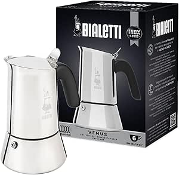

Our scores
- Design & build quality8.0/10
- Coffee taste8.0/10
- Ease of use8.0/10
- Maintenance8.0/10
- Value for money9.0/10
Verdict
A stylish, durable induction-compatible stainless steel moka pot for those who want to avoid aluminium. It can produce excellent, powerful coffee but requires more fine-tuning than the Moka Express. A great choice if you are prepared to perfect your technique — less ideal if you want flawless results straight from the first use.
The Bialetti Musa is Bialetti's other major stainless steel moka pot, alongside the Venus. It is designed as a modern, sleek interpretation of the classic moka pot, but entirely in stainless steel and compatible with all heat sources including induction (except the smallest 2-cup model). It is a logical choice if you want the traditional moka experience without an aluminium pot.
Design & build quality
In terms of shape, the Musa is slightly more "rounded" and organic than the straighter Venus: a slightly curved cylindrical body in polished stainless steel, with an elegant handle and a classic lid. The steel used is 18/10, which is a clear step up from generic copies in terms of both durability and finish. The handle is positioned and insulated to stay cool enough for safe serving.
The Musa is available in several sizes — 2, 4, 6 and 10 cups — where one "cup" corresponds to approximately 40–50 ml of espresso-style coffee. From the 4-cup model upwards they are generally induction-compatible thanks to a magnetic base; the 2-cup model is often too small to be detected by an induction zone.
Reviews of the build quality are overwhelmingly positive: solid body, reliable valve and an overall impression of a "serious" stainless steel moka pot.
Coffee taste: a mixed picture depending on technique
In terms of taste the reviews are divided. Some tests and users feel the Musa produces a rich, full-bodied coffee, ideal as a camping espresso or morning shot: "clean but rich taste, with a good mouthfeel and little residue." Outdoor Gear Lab even awarded it the "Top Pick" label for camping, noting it is easy to use and consistently produces strong, tasty coffee without fuss.
On the other hand, there are also critical reviews that, after multiple tests, conclude the Musa "does not make good coffee" when following the instructions strictly. The coffee there is described as bitter, harsh and metallic — likely caused by an unfavourable ratio between the water chamber and the filter: too much water relative to the amount of coffee the basket can hold. According to the same source, better results come from using less water than Bialetti recommends, but that is exactly the problem: a well-designed moka pot should produce a great cup by following the instructions.
In practice this boils down to: the Musa can produce excellent, powerful coffee, but requires some fine-tuning. A slightly higher coffee dose and/or less water than the instructions, combined with a low flame and removing it immediately at the first gurgle, helps reduce bitterness. For many users this is acceptable; for those seeking a "always good" moka pot without thinking, the Moka Express is more forgiving.
Ease of use & maintenance
Using the Musa is much like any other moka pot: water just below the valve, fill the filter basket without tamping, screw together, place on the heat and wait for the coffee to rise into the upper chamber. Stainless steel reacts slightly differently to heat than aluminium: the pot heats a little more slowly but retains heat better and is less prone to warping.
Outdoor and camping reviews highlight that the Musa "makes strong coffee with minimal effort, and is very easy to clean." One very critical test notes the opposite: in the upper chamber there is a narrow groove around the inner edge where grounds can accumulate, making thorough cleaning tricky. In practice this depends on your perfectionism: those who rinse carefully after each use will have few problems; those who rinse quickly and put it away risk burnt deposits over time.
The advantage of stainless steel is that you worry less about discolouration or oxidation than with aluminium. The dishwasher is not recommended by most manufacturers to preserve the shine, but hand washing with hot water is sufficient.
Musa vs. other Bialetti moka pots
Compared with the Moka Express and the Venus, the Musa positions itself as:
- more elegant in shape than the Moka Express;
- slightly more classic and "rounded" than the straighter Venus;
- fully stainless steel and induction-compatible (from 4 cups), like the Venus.
What reviewers seem to agree on is that the absolute taste reference at Bialetti remains the Moka Express. The Musa is more of a compromise: you may sacrifice a little of the pure taste potential in exchange for the comfort, durability and induction-compatibility of stainless steel. Some reviewers prefer the Venus to the Musa, finding it slightly easier to use and clean, while others prefer the Musa precisely for its shape and "camping-proof" character.
Bialetti Musa
See price on Amazon →| Brand | Bialetti |
|---|---|
| Model | Musa |
| Material | 18/10 stainless steel |
| Capacity | 2, 4, 6 or 10 cups |
| Heat source | Gas, electric, induction (4 cup+) |
| Maintenance | Hand wash with hot water, not dishwasher-safe |
Who is the Bialetti Musa for?
The Musa is a smart choice if you are primarily looking for an induction-compatible stainless steel moka pot with a more classic look than the Venus. It suits users who:
- want to make daily moka on induction or gas without aluminium;
- value a solid, durable moka pot they can take camping or to a holiday home;
- are prepared to experiment a little with water level, grind and heat to optimise the taste.
If you are primarily looking for the best possible coffee quality with the least adjustment, the Moka Express (aluminium) or possibly the Venus (stainless steel) is a safer bet. But if what matters to you is an elegant stainless steel moka pot that lasts for years and works on induction, the Musa — used well — can be an excellent companion.
Frequently asked questions
Does the Bialetti Musa work on induction?
Yes, from the 4-cup model upwards. The 4, 6 and 10-cup versions have a magnetic base that is detected by induction hobs. The 2-cup version is too small and is generally not induction-compatible without an adapter disc.
Bialetti Musa vs. Bialetti Venus — what is the difference?
Both are stainless steel and induction-compatible. The Venus has a straighter, more angular shape; the Musa is rounder and slightly more organic. In practice the Venus is considered slightly more consistent for taste; the Musa is praised for its design and robustness outdoors. Taste is nearly identical when using both correctly.
Why does the Bialetti Musa taste bitter?
This is a common complaint. The most frequent cause is using the full water level as instructed, combined with a very fine grind. Solution: use slightly less water than the maximum, keep the heat low, and remove from the heat immediately when the first coffee starts gurgling out.
How do you clean the Bialetti Musa?
Rinse with hot water after each use. Avoid the dishwasher to preserve the polish. For the narrow groove around the inner edge of the upper chamber, a small bottle brush is useful. No soap is needed for regular cleaning — hot water is sufficient to remove coffee residues.
About the author
Timo Dekker
Timo started behind the bar of an Amsterdam café and became fascinated by how small differences in grind or heat can transform a cup of coffee. He now works primarily from home, testing Italian moka pots on gas, induction and electric hobs, from entry-level models to pricier design pieces. For Italian Moka Pot, he brings together these experiences in practical reviews and guides, so you know what a moka pot really does on your stove, not just in the product photo.